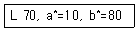

컬러리스트산업기사 (2018-04-28 기출문제)
1과목: 색채심리
1. 병원 수술실의 의사 복장이 청록색인 이유로 가장 적합한 것은?
- 위급한 경우 눈에 잘 띄게 하기 위하여
- 잔상 현상을 없애기 위해
- 청결하고 위생적으로 보이기 위해
- 의사의 개인적 지위를 나타내기 위해
(정답률: 96%)

2. 형용사의 반대어를 스케일로써 측정하여 색채에 대한 심리적인 측면을 다면적으로 다루는 색채분석 방법은?
- 연상법
- SD법
- 순위법
- 선호도 추출법
(정답률: 89%)
3. 색채와 문화에 대한 설명 중 틀린 것은?
- 1940년대 초반에는 군복의 영향으로 검정, 카키, 올리브 등이 유행하였다.
- 각 문화권의 특색은 색채의 연상과 상징을 통해 나타난다.
- 문화 속에서 가장 오래된 색이름은 파랑(blue)이다.
- 색이름의 종류는 문화가 발달할수록 세분화되고 풍부해진다.
(정답률: 77%)
4. 색채의 상징적 의미가 사용되는 분야가 아닌 것은?
- 관료의 복장
- 기업의 C.I.P
- 안내 픽토그램
- 오방색의 방위
(정답률: 69%)
5. 색채의 연상형태 및 색채문화에 대한 설명 중 옳지 않은 것은?
- 파버 비렌은 보라색의 연상형태를 타원으로 생각했다.
- 노란색은 배신, 비겁함이라는 부정의 연상언어를 가지고 있다.
- 초록은 부정적인 연상언어가 없는 안정적이고 편안함의 색이다.
- 주황은 서양에서 할로윈을 상징하는 색채이기도 하다.
(정답률: 65%)
6. 다음 색채의 연상을 자유 연상법으로 조사한 중 가장 거리가 먼 것은?
- 빨간색을 보면 사과, 태양 등의 구체적인 연상을 한다.
- 검은색과 분홍색은 추상적인 연상의 경향이 강하다.
- 색채에는 어떤 개념을 끌어내는 힘이 있어 많은 연상이 가능하다.
- 성인은 추상적인 연상에서 이어지는 구체적인 연상이 많아진다.
(정답률: 33%)
7. 색채조절을 위한 고려사항 중 잘못된 것은?
- 시간, 장소, 경우를 고려한 색채조절
- 사물의 용도를 고려한 색채조절
- 사용자의 성향을 고려한 색채조절
- 보편적 색채 연상을 벗어난 사용자의 개성을 고려한 색채조절
(정답률: 83%)
8. 색채 감성에 대한 설명 중 옳은 것은?
- 색채 감정은 국가마다 다르다.
- 한국인과 일본인의 색채감성은 동일하다.
- 한국인의 색채감성은 논리적, 수학적, 기하학적이다.
- 규칙적으로 선정된 명도, 채도, 색상은 색채의 요소가 일정하더라도 조화를 이루지 못한다.
(정답률: 85%)
9. 민트(박하) 사탕을 위한 포장지를 선택하려고 할 때 내용물의 이미지를 가장 적절하게 표현할 수 있는 색상의 조화는?
- 노랑과 은색
- 브라운과 녹색
- 노랑과 검정
- 녹색과 은색
(정답률: 92%)
10. 소비자가 개인적인 제품을 구매하고 결정하는데 가장 영향을 많이 주는 대상은?
- 한 가지 목적을 가지고 모이는 희구집단
- 개인의 취향과 의견에 영향을 주는 대면집단
- 가정의 경제력을 가진 결정권자
- 사회계급이 같은 계층의 집단
(정답률: 83%)
11. 색채를 효율적으로 활용하기 위해 계획, 조직, 지후, 조정, 통제하는 활동을 의미하는 것은?
- 색채관리
- 색채정책
- 색채개발
- 색채조사
(정답률: 79%)
12. 다음 중 식욕을 자극하는 색은?
- 주황색
- 파란색
- 보라색
- 자주색
(정답률: 95%)
13. 다음 중 비상구 및 피난소, 사람 또는 차량의 통행표지에 쓰이는 안전ㆍ보건표지의 색채는?
- 7.5R 4/14
- 5Y 8.5/12
- 2.5PB 4/10
- 2.5G 4/10
(정답률: 90%)
14. 색채의 기능에 대한 설명으로 틀린 것은?
- 색채에 대한 인간의 의식적 무의식적 반응을 이용하여 색채의 기능적 측면을 활용할 수 있다.
- 안전색은 안전의 의미를 지닌 특별한 성질의 색이다.
- 색채치료는 색채를 이용하여 건강을 회복시키고 유지하도록 돕는 심리기법 중의 하나이다.
- 안전색채는 안전표지의 모양에 맞추어서 사용하며, 다른 물체의 색과 유사하게 사용해야 한다.
(정답률: 82%)
15. 색채에 의한 정서적 반응으로 볼 수 없는 것은?
- 색의 온도감은 색의 속성 중 색상에 주로 영향을 받는다.
- 유채색이 무채색보다 더 진출하는 느낌을 준다.
- 한색계열의 저채도 색이 심리적으로 안정된 느낌을 준다.
- 중량감에 가장 큰 영향을 미치는 것은 채도로, 채도의 차이가 무게감을 좌우한다.
(정답률: 75%)
16. 색채와 소리의 관계에 대한 설명으로 틀린 것은?
- 뉴턴은 일곱가지 색을 칠 음계에 연계시켜 색채와 소리의 조화론을 설명하였다.
- 카스텔은 C는 청색, D는 녹색, E는 주황, G는 노랑 등으로 음계와 색을 연결시켰다.
- 색채와 음계의 관계는 사람마다 다르게 느끼므로 공통된 이론으로 발전되지는 못하였다.
- 몬드리안의 '브로드웨이 부기우기' 작품은 다양한 소리와 역동적인 움직임을 표현한 것이다.
(정답률: 68%)
17. 색채조절에 대한 설명 중 가장 거리가 먼 것은?
- 산업용으로 쓰이는 색은 부드럽고 약간 회색빛을 띤 색이 좋다.
- 비교적 고온의 작업환경 속에서 일하는 경우에 초록이나 파란색이 좋다.
- 우중충한 회색빛의 기계류는 중요부분과 작동부분을 담황색으로 강조하는 것이 좋다.
- 색은 보기에 알맞도록 구성되어야 하는 것이 아니라 참고 견딜 수 있도록 구성되어야 한다.
(정답률: 88%)
18. 색채마케팅 전략은 (A) → (B) → (C) → (D)의 순으로 발전되어 왔다. 다음 중 각 ( )에 들어갈 내용이 틀린 것은?
- A：매스마케팅
- B：표적 마케팅
- C：윈윈마케팅
- D：맞춤마케팅
(정답률: 70%)
19. 요하네스 이텐의 계절과 연상되는 배색이 아닌 것은?
- 봄은 밝은 톤으로 구성한다.
- 여름은 원색과 선명한 톤으로 구성한다.
- 가을은 여름의 색조와 강한 대비를 이루고 탁한 톤으로 구성한다.
- 겨울은 차고, 후퇴를 나타내는 회색톤으로 구성한다.
(정답률: 77%)
20. 다음 중 어떤 물체를 보고 연상되어 떠오르는 '기억색'에 대한 설명이 옳은 것은?
- 붉은색 사과는 실제 측색되는 색보다 더 붉은 빨간색으로 표현한다.
- 이슬람 문화권에서는 전통적으로 녹색과 흰색을 많이 사용하였다.
- 단맛의 배색을 위해 솜사탕의 이미지를 색채로 표현한다.
- 신학대학교의 구분과 표시를 위해 보라색을 사용하였다.
(정답률: 60%)
2과목: 색채디자인
21. 광고 캠페인 전개 초기에 소비자의 호기심을 불러일으키기 위해 단계별로 조금씩 노출시키는 광고는?
- 티저 광고
- 팁온 광고
- 패러디 광고
- 포지셔닝 광고
(정답률: 91%)
22. 패션디자인의 원리에 대한 설명 중 틀린 것은?
- 균형은 디자인 요소의 시각적 무게감에 의하여 이뤄진다.
- 리듬은 디자인의 요소 하나가 크게 강조될 때 느껴진다.
- 강조는 보는 사람의 시선을 끄는 흥미로운 부분이 있을 때 느껴진다.
- 비례는 디자인 내에서 부분들 간의 상대적인 크기 관계를 의미한다.
(정답률: 78%)
23. 미용 디자인의 특성 중 거리가 먼 것은?
- 개인의 미적 욕구를 만족시켜야 하므로 개개인의 신체특성을 고려하여야 한다.
- 아름다움이 중요하므로 시간적 제약의 의미는 크지 않다.
- 보건위생상 안전해야 한다.
- 사회활동에 도움이 되어야 한다.
(정답률: 70%)
24. 다음 중 디자인의 요소에 해당되지 않는 것은?
- 구성, 리듬
- 형, 색
- 색, 빛
- 형, 재질감
(정답률: 35%)
25. 패션 색채계획을 위한 색체 정보 분석의 주된 내용이 아닌것은?
- 시장정보
- 소비자정보
- 유행정보
- 가격정보
(정답률: 85%)
26. 디자인의 목적에 '미', 와 '기능'에 대해 빅터 파파넥(VictorPapanek)은 '복합기능(function complex)'으로 규정하였다. 그의 주장을 뒷받침하는 포괄적 의미에 해당하지 않는 것은?
- 방법 (method)
- 필요성(need)
- 이미지(image)
- 연상(association)
(정답률: 52%)
27. 새로운 형태와 기능을 창조하는 경우로 디자인 개념, 디자이너의 자질과 능력, 시스템, 팀웍 등이 핵심이 되는 신제품 개발의 유형은?
- 모방디자인
- 수정디자인
- 적응디자인
- 혁신디자인
(정답률: 87%)
28. 상품 색채계획 시 고려해야 할 사항이 아닌 것은?
- 소비자가 그 상품에 대하여 가지는 심리적 기대감의 반영
- 유행 정보 등 유행색이 해당 제품에 끼치는 영향
- 색채와 형태의 이미지 조화
- 재료 기술, 생산 기술 미반영
(정답률: 85%)
29. 문제해결과정으로서의 디자인 과정 단계가 옳게 나열된 것은?
- 조사 → 계획 → 분석 → 종합 → 평가
- 분석 → 계획 → 조사 → 종합 → 평가
- 계획 → 조사 → 분석 → 종합 → 평가
- 계획 → 분석 → 조사 → 종합 → 평가
(정답률: 77%)
30. 다음 중 '디자인 경영'의 개념에 해당되지 않는 것은?
- 경영 목표의 달성에 기여함이란 대중의 생활복리 증진시켜 주는 것이 궁극적인 목적이 될 수 있다.
- 디자인 경영이란 서비스의 질적 수준과 생산성을 제고할 수 있도록 해주는 지식 체계라고도 할 수 있다.
- 디자인 경영은 '디자인 관리'라고도 부르며, 1990년대에 들어서면서부터 세계적으로 가장 빈번하게 사용되는 디자인 용어 중의 하나이다.
- '디자인 경영'은 본질적으로 '비지니스 경영'과 동일한 개념이다.
(정답률: 55%)
31. 사계절의 색채표현법을 도입한 미용 디자인의 퍼스널 컬러 진단법에서 정확한 진단을 위해 지켜야 할 사항이 아닌 것은?
- 기초 메이크업을 한 상태에서 시작한다.
- 자연광이나 자연광과 비슷한 조명 아래에서 실시한다.
- 흰 천으로 머리와 의상의 색을 가리고 실시한다.
- 봄, 여름, 가을, 겨울의 각 계절색상의 천을 대어 보아 얼굴색의 변화를 관찰한다.
(정답률: 81%)
32. 다음 중 색채계획 시 배색 방법에서 주조색 - 보조색 - 강조색의 일반적인 범위는?
- 90% - 7% - 3%
- 70% - 25% - 5%
- 50% - 40% - 10%
- 50% - 30% - 20%
(정답률: 84%)
33. 20세기 초 이탈리아에서 일어난 전위예술 운동으로 기존의 낡은 예술을 모두 부정하고, 기계 세대에 어울리는 새로운 다이나믹한 미를 창조할 것을 주장하며, 주로 하이테크 소재로 색채를 표현한 예술사조는?
- 아방가르드(Avant-garde)
- 미래주의(Futurism)
- 옵아트(Op Art)
- 플럭서스(Fluxus)
(정답률: 69%)
34. 19세기 미술공예운동(Art and Craft movement)이 일어나게 된 근본 원인은?
- 미술과 공예작품의 가격이 급격하게 하락되었기 때문
- 기계로 생산된 제품의 질이 현저하게 낮아졌기 때문
- 미술작품과 공예작품을 구별하기 위해
- 미술가와 공예가의 사회적 위상을 제고시키기 위해
(정답률: 60%)
35. 바우하우스(Bauhaus)에 대한 설명 중 틀린 것은?
- 독일 바이마르 공화국 시절 설립된 디자인 학교로 오늘날 디자인 교육원리를 확립하였다.
- 마이어는 예술은 집단 사회의 모든 사람이 쉽게 이해할 수 있어야 한다고 주장하였다.
- 데사우(Dessau) 시의 바우하우스는 수공생산에서 대량 생산용의 원형 제작이라는 일종의 생산 시험소로 전환되었다.
- 그로피우스는 디자인을 생활현상이라는 사회적 측면으로 인식하여 건축을 중심으로 재정비하였다.
(정답률: 34%)
36. 그림의 마크를 부여받기 위해 부합되는 기준이 아닌 것은?
- 기능성
- 경제성
- 심미성
- 주목성
(정답률: 49%)
37. 디자인이란 용어의 의미와 거리가 먼 것은?
- 지시
- 계획
- 기술
- 설계
(정답률: 45%)
38. 모더니즘의 대두와 함게 주목을 받게 된 색은?
- 빨강과 자주색
- 노랑과 청색
- 흰색과 검정색
- 베이지색과 카키색
(정답률: 66%)
39. 디자인 과정에서 드로잉의 주요 역할과 거리가 먼 것은?
- 아이디어의 전개
- 형태 연구 및 정리
- 사용성 검토
- 프레젠테이션
(정답률: 60%)
40. 색채계획 및 평가를 위한 설문지 작성 시 유의사항이 아닌것은?
- 짧고 간결한 문체로 써야 한다.
- 포괄적인 의견이 나올 수 있도록 유도질문을 사용하기도 한다.
- 응답자의 자존심을 건드리지 않는 용어를 선택해야 한다.
- 어려운 전문용어는 되도록 쓰지 말고, 써야 할 경우에는 이미지 사진이나 충분한 설명을 덧붙인다.
(정답률: 74%)
3과목: 섹채관리
41. 다음 중 진주광택 안료의 색채 특성을 측정하기 위하여 필요한 방법은?
- 다중각(multiangle) 측정법
- 필터감소(filter reduction)법
- 이중 모노크로메이터법(two-monochromator method)
- 이중 모드법(two-mode method)
(정답률: 63%)
42. 다음 중 색 표시계 X0 Y10 Z10에서 숫자 10이 의미하는 것은?
- 10회 측정 평균치
- 10°시야 측정치
- 측정 횟수
- 표준 광원의 종류
(정답률: 60%)
43. 페인트(도료)의 4대 기본 구성 성분과 가장 거리가 먼 것은?
- 안료(Pigment)
- 수지(Resin)
- 용제(Solvent)
- 염료(Dye)
(정답률: 52%)
44. CIE 표준광에 대한 설명으로 옳은 것은?
- A：색온도 약 2856K
백열전구로 조명되는 물체색을 표시할 경우에 사용한다. - B：색온도 4874K
형광을 발하는 물체색의 표시에 사용한다. - C：색온도 6774K
형광을 발하는 물체색의 표시에 사용한다. - D：색온도 6504K
백열전구로 조명되는 물체색을 표시할 경우에 사용한다.
(정답률: 47%)
45. 반투명 유리나 플라스틱을 사용하여 광원 빛의 60~90%가 대상체에 직접 조사되고 나머지가 천장이나 벽에서 반사되어 조사되는 방식은?
- 반간접조명
- 간접조명
- 반직접조명
- 직접조명
(정답률: 72%)
46. 구멍을 통하여 보이는 균일한 색으로 깊이감과 공간감을 특정 지을 수 없도록 지각되는 색은?
- 개구색
- 북창주광
- 광원색
- 원자극의 색
(정답률: 69%)
47. 모니터의 검은색 조정 방법에서 무전압 영역과 비교하기 위한 프로그램의 RGB 수치가 올바르게 표기된 것은?
- R＝0, G＝0, B＝0
- R＝100, G＝100, B＝100
- R＝255, G＝255, B＝255
- R＝256, G＝256, B＝256
(정답률: 52%)
48. 페인트, 잉크, 염료, 플라스틱과 같은 산업분야에서 사용되는 CCM의 도입 목적 및 장점에 해당되지 않는 것은?
- 조색시간 단축
- 소품종 대량생산
- 색채품질관리
- 원가절감
(정답률: 66%)
49. 도료 중에서 가장 종류가 많으며, 일반적으로 내알칼리성으로 콘크리트나 모르타르의 마무리 도료로 쓰이는 것은?
- 천연수지 도료
- 플라스티졸 도료
- 수성 도료
- 합성수지 도료
(정답률: 80%)
50. 측색 시 조명과 수광의 조건이 아닌 것은?
- (0：45a)
- (di：8)
- (d：0)
- (45：45)
(정답률: 62%)
51. 수은램프에 금속할로겐 화합물을 첨가하여 만든 고압수은등으로서 효율과 연색성이 높은 조명은?
- 나트륨등
- 메탈할라이드등
- 크세논램프
- 발광다이오드
(정답률: 55%)
52. CCM과 관련된 용어가 아닌 것은?
- 분광반사율
- 산란계수
- 흡수계수
- 연색지수
(정답률: 39%)
53. 분광 반사율이 정확하게 일치하는 완전한 물리적인 등색이 의미하는 것은?
- 아이소메리즘
- 상관색온도
- 메타메리즘
- 색변이지수
(정답률: 66%)
54. 물체의 분광 반사율, 분광 투과율 등을 파장의 함수로 측정하는 계측기는?
- 광전 색채계
- 분광 광도계
- 시감 색채계
- 조도계
(정답률: 88%)
55. 측색기의 측정 결과 다음과 같은 결과를 얻었다면 어떤 색채의 시료였을 것으로 추정되는가?

- 빨강
- 청록
- 초록
- 노랑
(정답률: 71%)
56. KS의 색채 품질관리 규정에 의한 백색도에 대한 설명으로 틀린 것은?
- 틴트 지수는 완전한 반사체의 경우 그 값이 100이다.
- 백색도 지수 및 틴트 지수에 의해 표시된다.
- 완전한 반사체의 백색도 지수는 100이고, 백색도 지수의 값이 클수록 흰 정도가 크다.
- 백색도 측정시 표준광원 D65를 사용한다.
(정답률: 29%)
57. 두 개의 시료색 자극의 색차를 나타내는 것으로 가장 알맞은 것은?
- Texture
- CIEDE2000
- Color appearance
- Gray scale
(정답률: 43%)
58. 모니터를 보고 작업할 시 정확한 모니터 컬러를 보기 위한 일반적인 조건이 아닌 것은?
- 모니터 캘리브레이션
- ICC 프로파일 인식 가능한 이미징 프로그램
- 시간대에 따라 변하지 않는 일정한 조명 환경
- 높은 연색성(CRI)의 표준광원
(정답률: 35%)
59. 발광 스펙트럼이 가시 파장역 전체에 걸쳐서 있고, 주된 발광의 반치폭이 대략 50nm를 초과하는 형광램프는?
- 콤팩트형 형광램프
- 협대역 발광형 형광램프
- 광대역 발광형 형광램프
- 3 파장형 형광램프
(정답률: 64%)
60. 디스플레이의 일종으로 자기발광성이 없어 후광이 필요하지만 동작전압이 낮아 소비 전력이 적고 휴대용으로 쓰일 수 있어 손목시계, 컴퓨터 등에 널리 쓰이고 있는 것은?
- LCD(Liquid Crystal Display)
- CRTD(Cathode-Ray Tube Display)
- CRT-Trinitron
- CCD(Charge Coupled Device)
(정답률: 76%)
4과목: 색채지각의이해
61. 색상대비에 대한 설명으로 틀린 것은?
- 단계적으로 균일하게 채색되어 있는 색의 경계부분에서 일어나는 대비현상이다.
- 색상이 다른 두 색을 인접해 놓으면 두 색이 서로의 영향으로 인하여 색상차가 크게 나는 현상이다.
- 1차색끼리 잘 일어나며 2차색, 3차색이 될수록 대비효과는 적게 나타난다.
- 색상환에서 인접한 두 색을 대비시키면 두 색은 각각 더 멀어지려는 현상이 나타난다.
(정답률: 40%)
62. 색채지각과 감정효과에 대한 설명이 옳은 것은?
- 무겁고 커다란 가방이 가벼워 보이도록 높은 명도로 색채계획하였다.
- 부드러워 보여야 하는 유아용품에 한색계의 높은 채도의 색을 사용하였다.
- 팽창되어 보일 수 있도록 저명도를 사용하여 계획하였다.
- 검정색과 흰색은 무채색으로 온도감이 없다.
(정답률: 54%)
63. 색이 온도감은 색의 속성 중 어떤 것에 주로 영향을 받는가?
- 채도
- 명도
- 색상
- 순도
(정답률: 77%)
64. 색채지각에 대한 설명이 틀린 것은?
- 연색성이란 색의 경연감이 관한 것으로 부드러운 느낌의 색을 의미한다.
- 밝은 곳에서 갑자기 어두운 곳으로 들어갔을 때 암순응 현상이 일어난다.
- 터널의 출입구 부분에서는 명순응, 암순응의 원리가 모두 적용된다.
- 조명광이나 물체색을 오랫동안 보면 그 색에 순응되어 색의 지각이 약해지는 현상을 색순응이라 한다.
(정답률: 71%)
65. 주위색의 영향으로 인접색에 가깝게 느껴지는 현상은?
- 동화 현상
- 면적 효과
- 대비 효과
- 착시 효과
(정답률: 76%)
66. 빛과 색채에 관한 설명 중 틀린 것은?
- 햇빛과 같이 모든 파장이 유사한 강도를 갖는 빛을 백색광이라 한다.
- 빛은 파장에 따라 서로 다른 색감을 일으킨다.
- 물체의 색은 빛의 반사와 흡수의 특성에 의해 결정된다.
- 여러 가지 파장이 고르게 반사되는 경우에는 유채색으로 지각된다.
(정답률: 63%)
67. 진출색에 대한 설명으로 틀린 것은?
- 유채색이 무채색보다 더 진출하는 느낌을 준다.
- 채도가 낮은 색이 채도가 높은 색보다 더 진출하는 느낌을 준다.
- 밝은 색이 어두운 색보다 더 진출하는 느낌을 준다.
- 따뜻한 색이 차가운 색보다 더 진출하는 느낌을 준다.
(정답률: 87%)
68. 다음 중 중간명도의 회색 배경에서 주목성이 가장 높은 색은?
- 노랑
- 빨강
- 주황
- 파랑
(정답률: 56%)
69. 망막에서 뇌로 들어가는 시신경 다발 때문에 상이 맺히지 않는 부분은?
- 중심와
- 맹점
- 시신경
- 광수용기
(정답률: 68%)
70. 다음 중 빛의 전달경로로 옳은 것은?
- 각막 - 수정체 - 홍채 - 망막 - 시신경
- 홍채 - 수정체 - 각막 - 망막 - 시신경
- 각막 - 망막 - 홍채 - 수정체 - 시신경
- 각막 - 홍채 - 수정체 - 망막 - 시신경
(정답률: 68%)
71. 원판에 흰색과 검은색을 칠하여 팽이를 만들어 빠르게 회전시켰을 때 유채색이 느껴지는 것을 무엇이라 하는가?
- 프루킨예 현상
- 메카로 효과
- 잔상 현상
- 페히너 효과
(정답률: 69%)
72. 보색은 물리보색과 심리보색으로 분류할 수 있다. 다음 중 보색의 종류가 나머지와 다른 하나는?
- 인간의 색채지각 요소인 망막 상의 추상체와 간상체의 특성에 기인한다.
- 헤링의 반대색설과 연관된다.
- 회전혼색의 결과 무채색이 된다.
- 잔상현상에 따라 보색이 보인다.
(정답률: 37%)
73. 순색의 빨강을 장시간 바라볼 때 나타나는 현상으로 옳은 것은?
- 순색의 빨강을 장시간 바라보면 양성잔상이 일어난다.
- 눈의 M추상체의 반응이 주로 나타난다.
- 원래의 자극과 반대인 보색이 지각된다.
- 눈의 L추상체의 손실이 적어 채도가 높아지게 된다.
(정답률: 70%)
74. 반대색설에 대한 설명이 옳은 것은?
- 물감의 혼합인 감산혼합의 이론과 일치한다.
- 색채지각의 물리학적인 측면에 중점을 둔다.
- 하양 - 검정, 빨강 - 초록, 노랑 - 파랑이 짝을 이룬다.
- 영과 헬름홀츠에 의해 발표되어진 색지각설이다.
(정답률: 62%)
75. 다음 혼색의 설명 중 잘못된 것은?
- 중간혼색 - 두 색 또 그 이상의 색이 섞였을 때 평균적인 밝기의 색
- 감법혼색 - 무대 조명의 색
- 가법혼색 - 모두 혼합하면 백색
- 병치혼색 - 직조된 천의 색
(정답률: 69%)
76. 색의 3속성에 관한 설명이 틀린 것은?
- 색상은 주파장의 종류에 의해 결정된다.
- 명도는 색의 밝고 어두운 정도를 나타낸다.
- 무채색이 많이 포함될수록 채도는 높아진다.
- 유채색은 색상, 명도, 채도의 3속성을 가지고 있다.
(정답률: 83%)
77. 가산혼합에 관한 설명 중 틀린 것은?
- 3원색을 모두 합하면 흰색이 된다.
- 혼합할수록 명도와 채도가 높아진다.
- Red와 Green을 혼합하면 Yellow가 된다.
- Green과 Blue를 혼합하며 Cyan이 된다.
(정답률: 60%)
78. 다음 중 명도대비가 가장 뚜렷한 것은?
- 빨강 순색 배경의 검정
- 파랑 순색 배경의 검정
- 노랑 순색 배경의 검정
- 주황 순색 배경의 검정
(정답률: 87%)
79. 인접한 두 색의 경계면에서 일어나는 대비 현상은?
- 보색대비
- 한난대비
- 계시대비
- 연변대비
(정답률: 58%)
80. 빛에 대한 설명으로 틀린 것은?
- 빛은 눈에 보이는 전자기파이다.
- 파장이 500nm인 빛은 자주색을 띤다.
- 가시광선의 파장범위는 380~780nm이다.
- 흰 빛은 파장이 다른 빛들의 혼합체이다.
(정답률: 60%)
5과목: 색채체계의이해
81. 먼셀 색입체를 특정 명도단계를 기준으로 수평으로 절단하여 얻은 단면상에서 볼 수 없 나머지 하나는?
- 5R 6/6
- N6
- 10GY 7/4
- 7.5G 6/8
(정답률: 54%)
82. 1931년도 국제조명학회에서 채택한 색체계는?
- 먼셀 색체계
- 오스트발트 색체계
- NS 색체계
- CIE 색체계
(정답률: 66%)
83. 한국산업표준의 색이름 설명으로 틀린 것은?
- 관용색 이름에는 선홍, 새먼핑크, 군청 등이 있다.
- 계통색 이름은 유채색의 계통색 이름과 무채색의 계통색 이름으로 나뉜다.
- 무채색의 기본색 이름은 하양, 회색, 검정이다.
- 부사 '아주'를 무채색의 수식형용사 앞에 붙여 사용할 수 없다.
(정답률: 44%)
84. 현색계와 혼색계를 바르게 설명한 것은?
- 현색계는 실제 눈에 보이는 물체색과 투과색 등이다.
- 현색계는 눈으로 비교, 검색할 수 없다.
- 혼색계는 수치로 구성되어 색의 감각적 느낌이 강하다.
- 혼색계에는 NCS 색체계가 대표적이다.
(정답률: 57%)
85. 색채의 표준화를 연구하여 흑색량(B), 백색량(W), 순색량(C)을 근거로, 모든 색을 B＋W＋C＝100 이라는 혼합비를 통해 체계화한 색체계는?
- 먼셀 색체계
- 비렌 색체계
- 오스트발트 색체계
- P.C.C.S. 색체계
(정답률: 66%)
86. 혼새계(Color Mixing System) 색체계의 특징이 아닌 것은?
- 정확한 색의 측정이 가능하다.
- 빛의 가산혼합의 원리에 기초하고 있다.
- 수치로 표시되어 수학적 변환이 쉽다.
- 숫자의 조합으로 감각적인 색의 연상이 가능하다.
(정답률: 46%)
87. 배색의 구성요소에 대한 설명으로 틀린 것은?
- 배색 시에는 대상에 동반되는 일정 면적과 용도 등을 고려해야 한다.
- 주조색은 배색에 사용된 색 가운데 가장 출현 빈도가 높거나 넓은 면적을 차지하는 색이다.
- 강조색은 차지하고 있는 면적으로 보면 가장 작은 면적에 사용되지만, 가장 눈에 띄는 포인트 색이다.
- 강조색 선택 시 주조색과 유사한 색상과 톤을 선택하면 개성 있는 배색을 할 수 있다.
(정답률: 87%)
88. 오스트발트 색채조화론의 기본 개념은?
- 조화란 유사한 것을 말한다.
- 조화란 질서가 있을 때 나타난다.
- 조화는 대비와 같다.
- 조화란 중심을 향하는 운동이다.
(정답률: 82%)
89. 비렌의 색채 조화론에서 사용되는 용어가 아닌 것은?
- 비렌의 색삼각형
- 바른 연속의 미
- Tint, Tone, Shade
- Scalar Moment
(정답률: 55%)
90. DIN 색체계는 어느 나라에서 도입한 것인가?
- 영국
- 독일
- 프랑스
- 미국
(정답률: 76%)
91. 다음 ISCC-NIST의 설명 중 틀린 것은?
- 1955년 ISCC-NBS 색채표준 표기법과 색이름이라는 이름으로 발표되었다.
- ISCC와 NIST는 색채의 전달과 사용상 편의를 목적으로 색이름사전과 색채의 계통적 분류법을 개발하였다.
- Light Violet의 먼셀 기호 색상은 1RP이다.
- 약자 v-Pk는 vivid pink의 약자이다.
(정답률: 58%)
92. 슈브롤의 색채조화론에 대한 설명으로 틀린 것은?
- 직물의 직조를 중심으로 색을 연구하여 동시대비의 다양한 원리를 발견하였다.
- 색상환은 빨강, 노랑, 파랑의 3원색에서 파생된 72색상으로 이루어졌는데 그 각각의 색상이 스케일을 구성한다.
- 색채조화를 유사조화와 대비조화 2종류로 나누었다.
- 색채의 기하학적 대비와 규칙적인 색상의 배열을 색상의 대비를 통하여 표현하려 했다.
(정답률: 23%)
93. 먼셀 색입체의 단면에 대한 설명으로 틀린 것은?
- 색입체의 수직단면은 종단면이라고도 하며, 같은 색상이 나타나므로 등색상면이라고도 한다.
- 색입체를 수평으로 자른 횡단면에는 같은 명도의 색이 나타나므로 등명도면이라고도 한다.
- 수직단면은 유사 색상의 명도, 채도변화를 한 눈에 볼 수 있으며, 가장 안쪽의 색이 순색이다.
- 수평단면은 같은 명도에서 채도의 차이와 색상의 차이를 한 눈에 알 수 있다.
(정답률: 50%)
94. 색채배색의 분리효과에 대한 설명으로 틀린 것은?
- 색유리와 색유리가 접하는 부분에 납 등의 금속을 끼워 넣음으로써 전체에 명쾌한 느낌을 준다.
- 색상과 톤이 비슷하여 희미하고 애매한 인상을 주는 배색에 세퍼레이션 컬러를 삽입하여 명쾌감을 준다.
- 무지개의 색, 스펙트럼의 배열, 색상환의 배열에서 그 예를 찾을 수 있다.
- 대비가 강한 보색배색에 밝은 회색이나 검은색 등 무채색을 삽입하여 배색한다.
(정답률: 70%)
95. NCS 색체계에서 W, S, C에 대한 설명으로 옳은 것은?
- W：흰색도, S：검은색도, C：순색도
- W：검은색도, S：순색도, C：흰색도
- W：흰색도, S：순색도, C：검은색도
- W：검은색도, S：흰색도, C：순색도
(정답률: 66%)
96. 오스트발트 색체계에서 등가색환 계열이란?
- 백색량이 모두 같은 색의 계열이다
- 등색상 삼각형 W, B와 평행선상에 있는 색의 계열이다.
- 순색이 모두 같게 보이는 색의 계열이다.
- 백색량, 흑색량, 순색량이 같은 색의 계열이다.
(정답률: 41%)
97. 먼셀(Munsell)기호의 색 표기법의 순서가 올바른 것은?
- 색상 - 채도 - 명도
- 색상 - 명도 - 채도
- 채도 - 명도 - 색상
- 채도 - 색상 - 명도
(정답률: 81%)
98. NCS 색입체를 구성하는 기본 6가지 색상은?
- 노랑, 빨강, 파랑, 초록, 흰색, 검정
- 빨강, 파랑, 초록, 보라, 흰색, 검정
- 노랑, 빨강, 파랑, 보라, 흰색, 검정
- 빨강, 파랑, 초록, 자주, 흰색, 검정
(정답률: 75%)
99. L a*b*색공간에 대한 설명으로 옳은 것은?
- L*a*b* 색공간에서 L*는 채도, a*와 b*는 색도좌표를 나타낸다.
- a*는 빨간색 방향, +b*는 파란색 방향이다.
- 중앙은 무색이다.
- +a*는 빨간색 방향, -a*는 노란색 방향이다.
(정답률: 59%)
100. 다음 중 관용색명이 아닌 것은?
- 적, 청, 황
- 살구색, 쥐색, 상아색, 팥색
- 코발트블루, 프러시안블루
- 밝은 회색, 어두운 초록
(정답률: 63%)